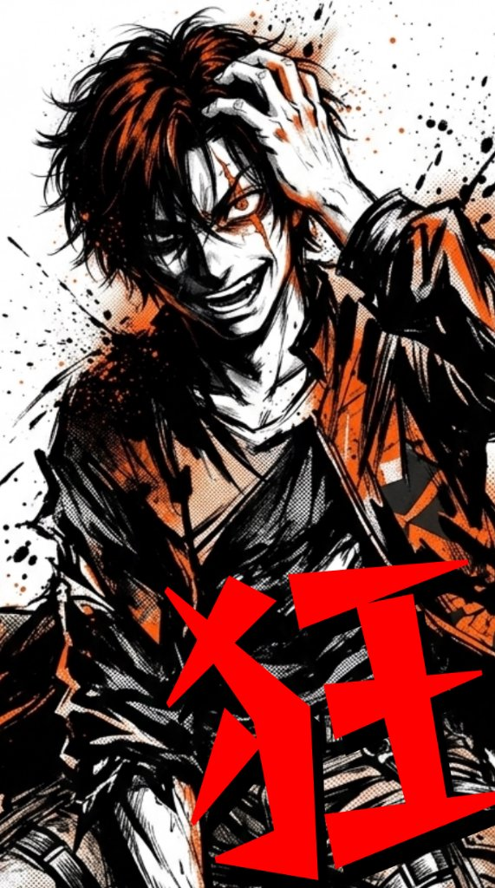
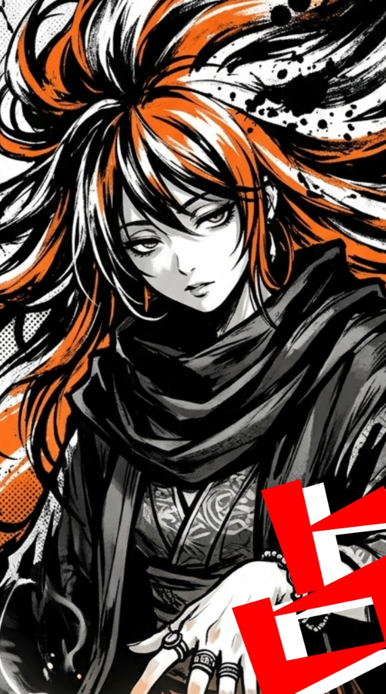
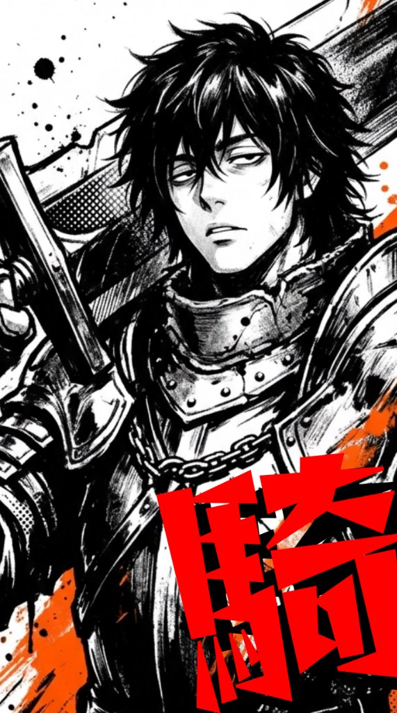
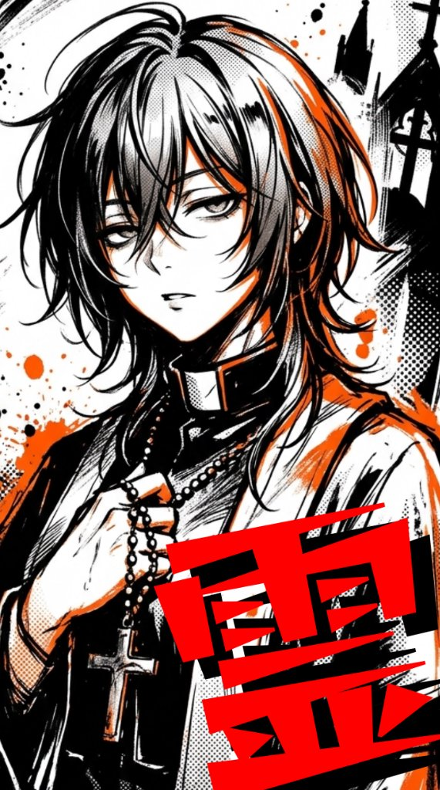
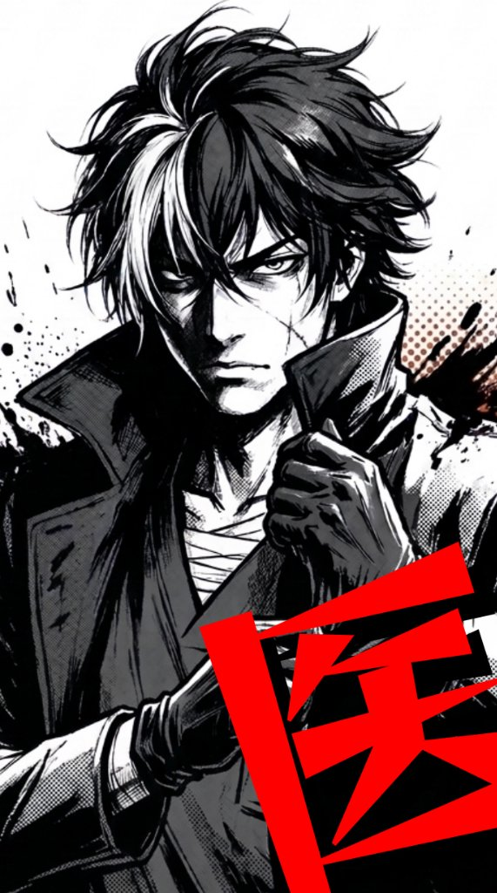
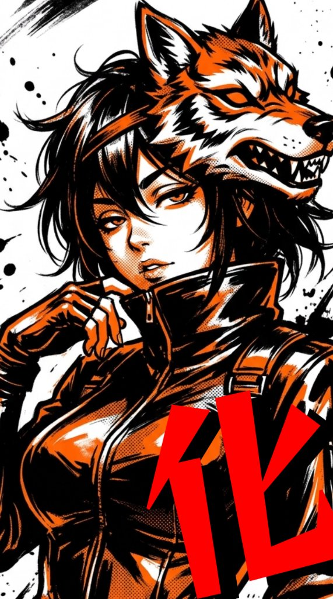
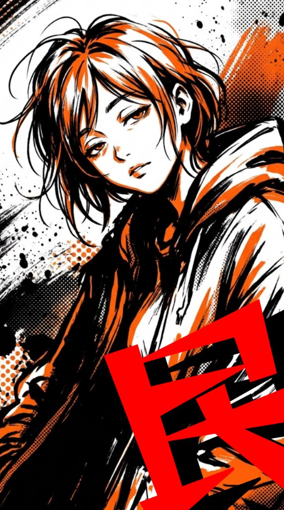

人狼陣営
人狼神WOLF GOD
夜襲：あり
占い：人狼
人狼数：カウント
最初から全員の役職がすべて判明している人狼の長。仲間と協力して夜に市民を襲撃する。
 人狼陣営
人狼陣営
人狼WEREWOLF
夜襲：あり
占い：人狼
人狼数：カウント
人狼同士（人狼神含む）はお互いがわかる。夜に相談して毎晩市民1人を襲撃する。

人狼陣営狂人MADMAN
夜襲：なし
占い：人間
人狼数：カウント外
人狼に味方する人間。人狼陣営の勝利が自身の勝利。※勝敗判定の人狼数には含まれない（人狼全滅で市民勝利）。
 人狼陣営
人狼陣営
サイコキラーPSYCHO
夜襲：返り討ち
占い：人間
人狼数：カウント外
夜に関わった（占い・護衛・襲撃・蘇生）プレイヤーを返り討ちにする。※勝敗判定の人狼数には含まれない。

占い師 🔮
毎夜1人を占い、その場で「人狼」か「人間」かを即時知る。

騎士 🛡️
毎夜1人を人狼の襲撃から護衛する（自分自身は守れない）。

霊媒師 🕯️
夜に、直前に追放された人物が「人狼」だったか即時知る。

恋人 💕
2人1組で互いが味方とわかる。片方が死ぬともう片方も後追い死亡。

奇跡の医者 💉
ゲーム中1回だけ死者を蘇生（サイコキラー蘇生時は自身が死亡）。

コスプレ 🎭
毎夜1人を護衛できるが、占われると「人狼」と判定される。

市民 👤
特殊能力なし。議論・タスク・投票で人狼を追放する基本役職。